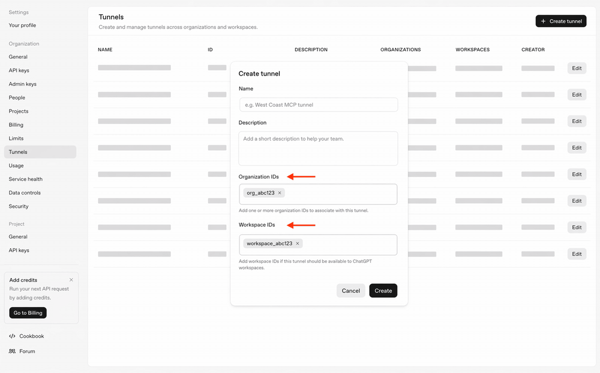
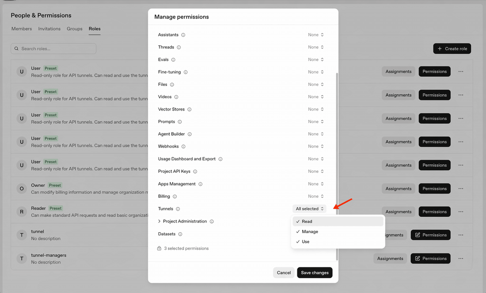
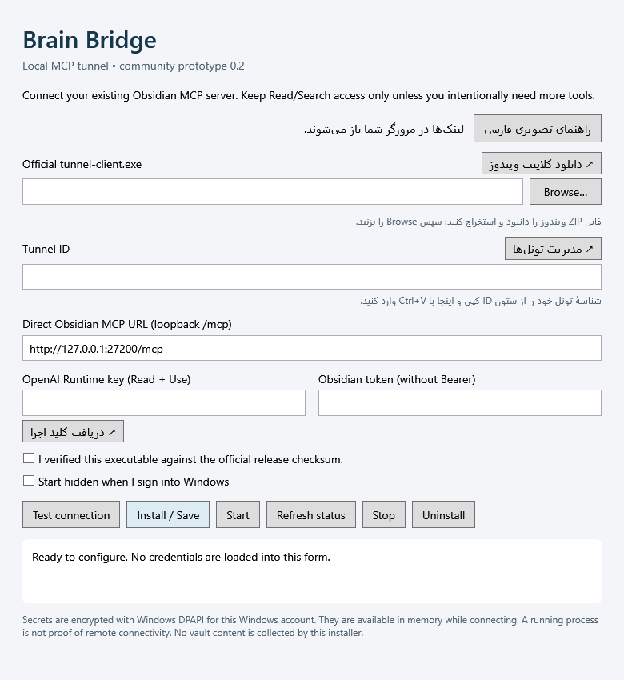

راهاندازی Brain Bridge، قدمبهقدم
از دانلود کلاینت تا پیدا کردن شناسهٔ تونل و تکمیل فرم؛ بدون نوشتن دستور PowerShell.
نسخهٔ آزمایشی • بررسی راهنما: ۸ اکتبر ۲۰۲۶ • این صفحه و تصاویر داخل بستهاند؛ لینکهای سرویس به اینترنت و ورود به حساب نیاز دارند.
۱) فایل کلاینت ویندوز را بگیرید
بازکردن دانلود رسمیدر صفحهٔ انتشار، بخش Assets را باز کنید؛ ممکن است لازم باشد Show all assets را بزنید. بستهٔ کامل tunnel-client را انتخاب کنید، نه نسخههای runtime یا فایل Source code.
- ویندوز معمولی Intel/AMD: فایلی با الگوی
tunnel-client-v…-windows-amd64.zip. - ویندوز روی پردازندهٔ ARM: فایلی با الگوی
tunnel-client-v…-windows-arm64.zip. نوع سیستم در Settings → System → About → System type دیده میشود.
نسخه و نام دقیق فایل ممکن است تغییر کند. دانلود رسمی از صفحهٔ Tunnels نیز ممکن است در حساب شما ارائه شود.
ZIP را با Extract All استخراج کنید. در Brain Bridge روی Browse بزنید و فایل tunnel-client.exe داخل پوشهٔ استخراجشده را انتخاب کنید.
پیش از تأیید کادر بررسی هش، مقدار SHA-256 فایل ZIP را با SHA256SUMS.txt همان انتشار مقایسه کنید. برای این مرحله میتوانید از ابزار گرافیکی محاسبهٔ SHA-256 که به آن اعتماد دارید استفاده کنید. Brain Bridge فعلاً هش رسمی فایل دانلودی را خودکار بررسی نمیکند. اگر بررسی نکردهاید، کادر تأیید را علامت نزنید.
۲) تونل خودتان را پیدا و شناسهاش را کپی کنید
بازکردن صفحهٔ تونلهاوارد حساب خود شوید و سازمان درست را انتخاب کنید. در فهرست Tunnels، تونل مربوط به همین اتصال را پیدا کنید. شناسهٔ کامل در ستون ID را کپی کنید؛ نام تونل یا نشانی مرورگر جایگزین آن نیست.
در Brain Bridge: داخل فیلد Tunnel ID کلیک و Ctrl+V کنید. اگر رابط سایت دکمهٔ کپی دارد، میتوانید از آن استفاده کنید.
اگر تونلی ندارید و اجازهٔ ساخت دارید، Create tunnel را بزنید، نام و محدودهٔ سازمان/Workspace مناسب را انتخاب کنید و سپس شناسهٔ تونل ساختهشده را کپی کنید. اگر صفحه یا مجوز ساخت در دسترس نیست، از مدیر سازمان کمک بگیرید؛ Brain Bridge دسترسی حساب را ایجاد نمیکند.

شناسه با tunnel_ شروع میشود؛ ادامهٔ آن را کامل و بدون فاصله وارد کنید. هیچ مقدار نمونهای را بهجای شناسهٔ حساب خود وارد نکنید.
۳) کلید Runtime با دسترسی مناسب
بازکردن صفحهٔ کلید Runtimeدر سازمان مربوط به تونل، کلید Runtime ایجاد کنید. در تنظیم مجوز کلید، Restricted و دسترسیهای Tunnels: Read + Use را انتخاب کنید. کلید را فقط داخل فیلد پوشیدهٔ OpenAI Runtime key وارد کنید. این فیلد برای Admin key نیست.

دسترسی نقش کاربر و محدودیتهای خود کلید باید اجازهٔ استفاده از تونل را بدهند. اگر گزینهها را نمیبینید یا دسترسی رد میشود، مدیر سازمان باید نقش شما را بررسی کند. کلید را در عکس، پیام یا گزارش قرار ندهید.
۴) آدرس و توکن Obsidian
در تنظیمات افزونهٔ MCP Connector داخل Obsidian، آدرس مستقیم سرور محلی و توکن همان Vault را پیدا کنید. توکن معمولاً در بخش Access Control مدیریت میشود؛ جای دقیق گزینهها به نسخهٔ افزونه بستگی دارد.
URL باید روی همین دستگاه و با مسیر /mcp باشد. مثال صرفاً آموزشی: http://127.0.0.1:27200/mcp؛ پورت واقعی خودتان را وارد کنید. URL واسط Codex یا لینک صفحهٔ وب را وارد نکنید. توکن را بدون پیشوند Bearer در فیلد پوشیده قرار دهید.
۵) فرم را تکمیل و اتصال را شروع کنید

پس از واردکردن اطلاعات، Install / Save را بزنید؛ این کار اتصال را هم آزمایش میکند. سپس Start و بعد Refresh status را انتخاب کنید. گزینهٔ اجرای خودکار فقط در صورت انتخاب شما فعال میشود.
دکمهٔ Test connection برای آزمون جداست. پس از هر عملیات، فیلدهای محرمانه پاک میشوند؛ اگر ابتدا تست کردید، برای نصب کلیدها را دوباره وارد کنید.
فعال بودن پردازش و آماده بودن اتصال محلی، اثبات فراخوانی موفق ابزار از ChatGPT نیست. آن مرحله را با Vault آزمایشی و دسترسی محدود Read/Search بررسی کنید.